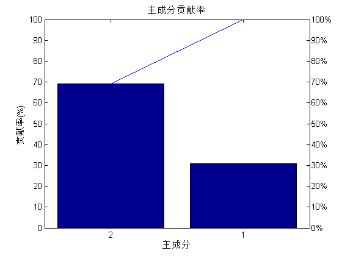
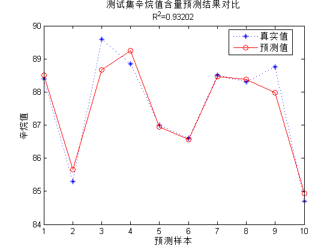

Contents
I. 清空环境变量
clear all
clc
II. 导入数据
load spectra;
III. 随机划分训练集与测试集
temp = randperm(size(NIR, 1));
% temp = 1:60;
1. 训练集——50个样本
P_train = NIR(temp(1:50),:); T_train = octane(temp(1:50),:);
2. 测试集——10个样本
P_test = NIR(temp(51:end),:); T_test = octane(temp(51:end),:);
IV. PLS回归模型
1. 创建模型
k = 2; [Xloadings,Yloadings,Xscores,Yscores,betaPLS,PLSPctVar,MSE,stats] = plsregress(P_train,T_train,k);
2. 主成分贡献率分析
figure percent_explained = 100 * PLSPctVar(2,:) / sum(PLSPctVar(2,:)); pareto(percent_explained) xlabel('主成分') ylabel('贡献率(%)') title('主成分贡献率')
3. 预测拟合
N = size(P_test,1); T_sim = [ones(N,1) P_test] * betaPLS;
V. 结果分析与绘图
1. 相对误差error
error = abs(T_sim - T_test) ./ T_test;
2. 决定系数R^2
R2 = (N * sum(T_sim .* T_test) - sum(T_sim) * sum(T_test))^2 / ((N * sum((T_sim).^2) - (sum(T_sim))^2) * (N * sum((T_test).^2) - (sum(T_test))^2));
3. 结果对比
result = [T_test T_sim error]
result = 88.4000 88.5096 0.0012 85.3000 85.6595 0.0042 89.6000 88.6678 0.0104 88.8500 89.2501 0.0045 87.0000 86.9406 0.0007 86.6000 86.5634 0.0004 88.5000 88.4720 0.0003 88.3000 88.3747 0.0008 88.7500 87.9750 0.0087 84.7000 84.9379 0.0028
4. 绘图
figure plot(1:N,T_test,'b:*',1:N,T_sim,'r-o') legend('真实值','预测值','location','best') xlabel('预测样本') ylabel('辛烷值') string = {'测试集辛烷值含量预测结果对比';['R^2=' num2str(R2)]}; title(string)